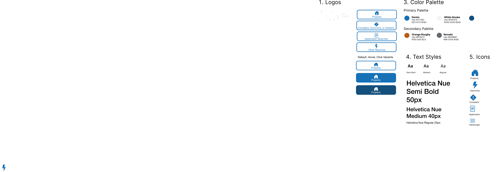

Last year, I learned through a grassroots collective of Asian migrant workers about how they used the New York Department of Buildings Search site in order to find out if their workplaces had tickets from the city. However, workers described the website as difficult to use, preventing them from accessing the information.
INITIAL EVALUATION
The website had some design benefits but largely presented significant usability issues.
The site also had significant accessibility issues. I used the WebAIM WAVE Tool to provide a summary of site accessibility.
MOCKUP DESIGN
I began by creating a style guide consistent with the City of New York's government sites' color palette and fonts.
From there, I created three high-fidelity wireframes for three-different screen sizes: a large desktop, a tablet, and a phone. In this redesign, I aimed to keep the simplicity of NYC websites and reduce complexity by hiding additional functions behind specific user paths distinguished by buttons.
MOCKUP IMPLEMENTATION & REFLECTION
I've implemented the home page of the website in order to implement the mockups. The redesigned page offers several key impovements:
These changes ultimately improve user experience by making the interface less overwhelming and clearly indicating possible interaction paths and additional guidance for users.
For websites intended for public service information sharing, designing with usability and accesibility in mind is especially important. I learned that maintaining simplicity and creating clear visual cues provided an effective way to redesign this website.